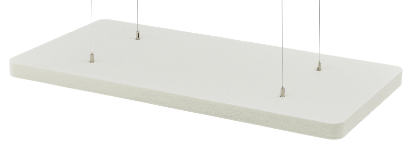
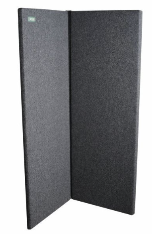

Acoustic-panels-specs
t.akustik PET Ceiling Absorber 120 WH
Manufacturers specification:
Absorption NRC = 0.95
Density: approx. 50 kg/m3
Material: PET fleece
Dimensions (H x W x D): 1200 x 600 x 50 mm
Weight: 2.5 kg
Flame retardant according to the ASTM E84 - Class 1
8pcs mounted with brass eyelets, nylon string and 3D-printed PLA brackets.

Clearsonic S2466x2 Sorber
Dimension: 1670 x 609 x 38 mm
